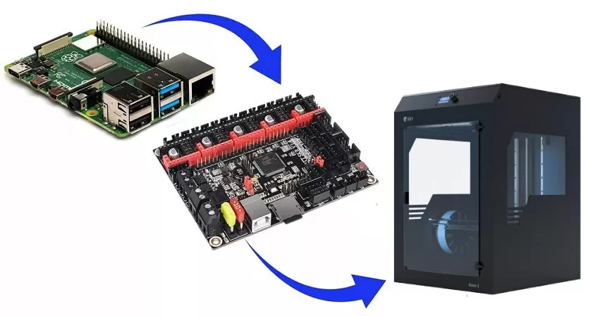

Зачем и из чего?
Установка на раз-два-три на Raspberry Pi 4B Итак, список оборудования до начала операции по апгрейду: 3D-printer Bizon 3 (или любой другой); Одноплатный компьютер Raspberry Pi 4B (с настройкой других компьютеров возможны отличия); Блок питания 5 В на 2 - 3 ампера; Радиатор охлаждения компьютера (желательно активный); Micro-SD карта памяти емкостью от 8 Гб, не ниже 10 класса; Кабель USB (в нашем случае принтерный).
Приводим пошаговую инструкцию по установке, подключению и настройке Octoprint на примере пары Bizon 3 с Raspberry Pi 4B. Скачиваем образ диска с сайта Octoprint для нашего компьютера. Получаем файл oktopi-*номер версии*.zip размером порядка 1 Гб, из которого извлекаем одноименный файл с расширением .img размером около 3 Гб. Записываем образ на micro-SD. Тут есть несколько вариантов, например, использовать программы balenaEtcher или Win32 Disk Imager. Для нашего одноплатника рекомендую использовать родной софт Raspberry Pi Imager, он гарантированно все сделает правильно с первой попытки.